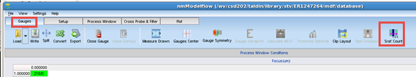
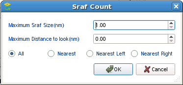

When working
with design files that include SRAFs, it can be helpful to know
when SRAFs are being crossed by user gauges.
Procedure
- Switch to the Gauges tab and click the Sraf Count button in the menu bar.

- In the dialog box that appears, set additional
parameters as follows:

Maximum Sraf Size (nm) —
Set this to the maximum size of an SRAF in nanometers.
Maximum Distance to Look (nm) —
Set this to the maximum distance to search beyond the edge of a
gauge to look for SRAFs in nm. The default is 0, which counts only
SRAFs touching the gauge.
SRAFs to Count —
The four unlabeled radio buttons at the bottom of the dialog indicate
which types of SRAFs to count.
All —
Count all SRAFs crossed by the gauge.
Nearest —
Count SRAFs between the main feature and two closest polygons, one
on the left/down side, and one on the right/up side.
Nearest Left —
Count only SRAFs between the main feature and the nearest polygon
to the left or down.
Nearest Right —
Count only SRAFs between the main feature and the right or up side.
Click OK when
you have finished making your selections.
Results
Calibre nmModelflow checks each gauge (it checks
disabled gauges as well) and counts the number of features crossed
by the gauge (plus the specified search distance) and returns the count
in a new column (SrafCount) added to the Gauge
Analysis tab.